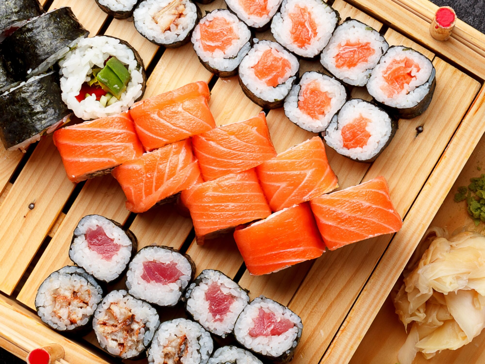

Sushi

Sushi is a traditional Japanese dish of prepared vinegared rice, usually with some sugar and salt, accompanied by a variety of ingredients, such as seafood, often raw, and vegetables.
Ingredients
- 6 Sheets sushi seaweed aka Nori
- 1 batch prepared sushi rice
- 1/2lb sushi-grade salmon or desired raw fish of choice
- 4 oz cream cheese sliced into strips
- 1 Avocado sliced
- soy sauce for serving
Steps
- Place the seaweed on a bamboo mat, then cover the sheet of seaweed with an even layer of prepared sushi rice. Smooth gently with the rice paddle.
- Layer salmon, cream cheese, and avocado on the rice, and roll it up tightly. Slice with a sharp knife, and enjoy with soy sauce.